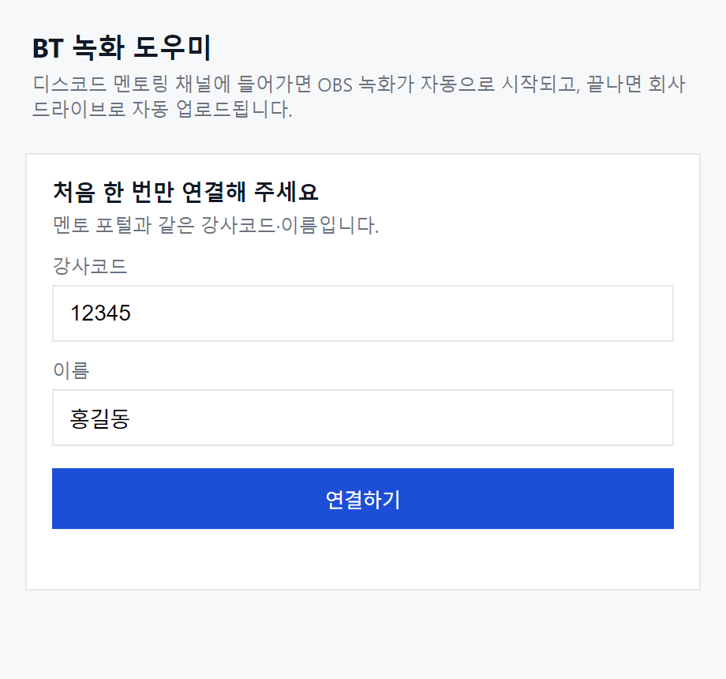
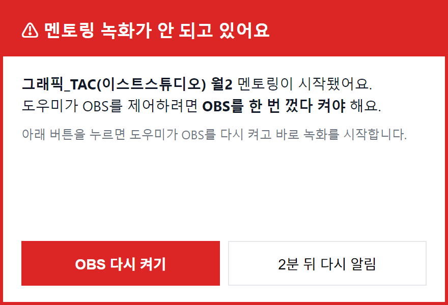
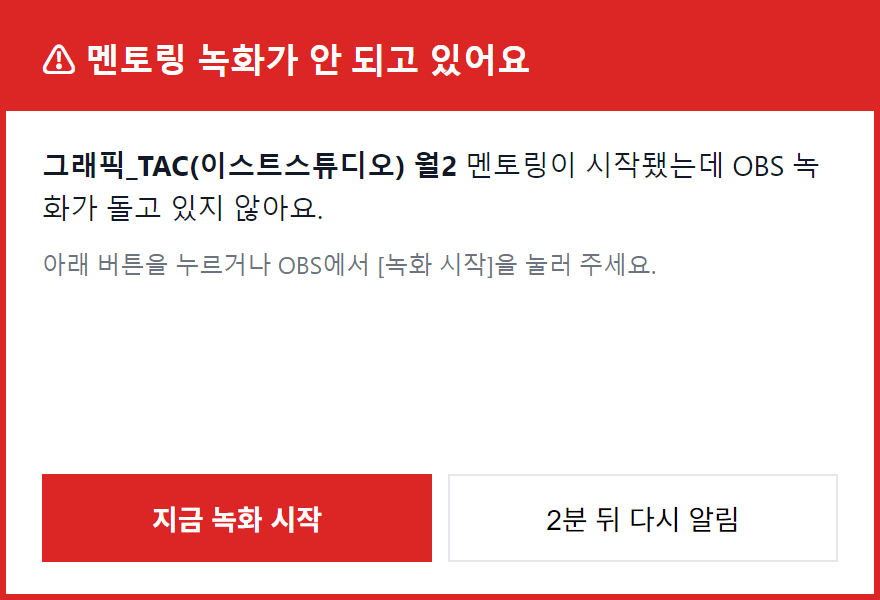

Step 2
사전 준비사항
멘토님으로 합류하신 후 최초 1회만 설정하면 되는 녹화 환경 세팅입니다. 이후에는 반 음성 채널에 들어가면 자동으로 녹화되고, 수업이 끝나면 드라이브에 자동으로 업로드됩니다.
SETUP
개강 전주 수요일 전까지 · ⏰ 약 10분
멘토링 녹화 준비
녹화본은 수강생의 복습 자료로 제공됩니다. OBS와 BT 녹화 도우미를 설치해 두면,
반 음성 채널에 들어갈 때 자동으로 녹화되고 수업이 끝나면 회사 드라이브에 자동으로 업로드됩니다.
세팅을 마치면 STEP 3의 MISSION 1에서 테스트 녹화 버튼으로 확인합니다.
💬 디스코드
- 수강생과 실시간으로 수업하는 곳
🎥 OBS
- 그 수업 화면을 녹화해 파일로 저장하는 프로그램
🔵 BT 녹화 도우미
- 수업이 시작되면 OBS 녹화를 켜고 끄고, 녹화본을 드라이브에 올려 주는 프로그램
세팅 순서 한눈에 보기
1단계 · OBS Studio 설치
🖥 Windows
- obsproject.com/download 접속 후 Windows 버전 다운로드 및 설치
- 설치 중 '최적화 마법사'가 나오면 취소 (전용 커스텀 프로파일 설정 예정)
🍎 Mac
- obsproject.com/download 접속 후 macOS 버전 다운로드, Applications 폴더에 드래그
- 첫 실행 시 아래 4가지 권한 필수 허용 (시스템 설정 > 개인정보 보호 및 보안)
- 화면 및 시스템 오디오 녹음 > OBS 체크
- 마이크 > OBS 체크
- 입력 모니터링 > OBS 체크
- 손쉬운 사용 > OBS 체크
2단계 · OBS 프로파일 가져오기
⬇ OBS_profile.zip 다운로드- 다운로드한 'OBS_profile.zip'의 압축을 해제하여 'OBS_profile' 폴더를 준비합니다.
- Windows에서 압축 해제가 되지 않는 경우 반디집(Bandizip)을 설치 후 시도해 주세요.
- OBS 상단 메뉴 > 프로파일(Profile) > 가져오기(Import)
- 압축 해제한 'OBS_profile' 폴더 선택 > 열기
- OBS 프로파일 메뉴 재선택 > '블루타이거 멘토링' 선택
위 설정으로 1080p/30fps, 고품질 녹화가 모두 설정됩니다.
화면·마이크·컴퓨터 소리 연결과 녹화 저장 위치는 다음 단계의 도우미가 알아서 맞추니 따로 손대지 않으셔도 됩니다.
화면·마이크·컴퓨터 소리 연결과 녹화 저장 위치는 다음 단계의 도우미가 알아서 맞추니 따로 손대지 않으셔도 됩니다.
멘토링 채널에 들어가면 OBS가 자동으로 녹화하도록 BT 녹화 도우미를 설치합니다.
사용하시는 운영체제의 카드만 펼쳐서 따라가시면 됩니다. (접속하신 기기에 맞는 카드가 자동으로 펼쳐집니다)
🖥 3단계 · BT 녹화 도우미 설치 (Windows) 설치 파일을 실행하면 끝납니다
⬇ BT 녹화 도우미 설치 파일 (Windows)
- 받은 파일을 더블클릭하면 바로 설치되고 도우미가 켜집니다.
파란 'Windows의 PC 보호' 창이 뜨면 [추가 정보] → [실행]을 눌러 주세요. 회사 내부용 프로그램이라 뜨는 안내입니다.
🍎 3단계 · BT 녹화 도우미 설치 (macOS) 터미널에 한 줄 붙여 넣으면 끝납니다
- Command(⌘) + Space로 Spotlight를 열고, '터미널' 입력 후 Enter를 누릅니다.
- 아래 줄을 복사해 터미널에 붙여 넣고(⌘ + V) Enter를 누르면, 20초쯤 뒤 BT Recorder가 열립니다.
curl -fsSL https://bt-backoffice.vercel.app/mentor/recorder/install-mac | bash
이렇게 설치하면 'Apple에서 확인할 수 없습니다' 창이 뜨지 않습니다.
터미널이 어려우시면 dmg 설치 파일을 받아 BT Recorder를 응용 프로그램 폴더로 끌어 넣으셔도 됩니다. 이때 위 창이 뜨면 [완료]를 누르고 시스템 설정 > 개인정보 보호 및 보안 맨 아래의 [그래도 열기]를 눌러 주세요.
터미널이 어려우시면 dmg 설치 파일을 받아 BT Recorder를 응용 프로그램 폴더로 끌어 넣으셔도 됩니다. 이때 위 창이 뜨면 [완료]를 누르고 시스템 설정 > 개인정보 보호 및 보안 맨 아래의 [그래도 열기]를 눌러 주세요.
3단계 이어서 · 도우미 연결하기 (공통)
- 도우미 창에 멘토 포털에 로그인할 때 쓰는 강사코드와 이름을 넣고 [연결하기]를 누릅니다.
- 한 번 연결하면 다음부터는 PC를 켤 때 도우미가 알아서 켜집니다.
- OBS가 켜져 있으면 빨간 안내 창이 뜹니다. [OBS 다시 켜기]를 누르면 연결이 끝납니다.


도우미는 작업 표시줄 오른쪽 아래(Mac은 화면 위쪽 메뉴 막대)의 파란 동그라미 아이콘으로 열 수 있습니다. 창을 닫아도 도우미는 계속 돌아갑니다.
연결을 마치셨다면, STEP 3 · MISSION 1에서 테스트 녹화 버튼으로 확인합니다.
녹화 방법 (세팅 완료 후)
- 평소처럼 반 음성 채널에 들어가면 20초 안에 녹화가 시작됩니다. OBS를 미리 켜 둘 필요는 없습니다.
- 수업을 마치고 채널에서 나가면 3분 뒤 녹화가 멈추고 드라이브에 자동으로 올라갑니다.
- 3분 안에 다시 들어오면 같은 녹화로 이어집니다.
- 보강 수업도 그 반 음성 채널에서 하면 똑같이 녹화·업로드됩니다. 다른 음성방에서는 녹화되지 않습니다.
수업 중 녹화가 돌지 않으면 화면 맨 앞에 빨간 창이 뜹니다. [지금 녹화 시작] 또는 [OBS 다시 켜기]를 눌러 주세요.
업로드가 끝날 때까지 PC를 몇 분 켜 두시는 게 좋습니다. 꺼 버렸다면 다음에 켤 때 이어서 올라갑니다.
업로드가 끝날 때까지 PC를 몇 분 켜 두시는 게 좋습니다. 꺼 버렸다면 다음에 켤 때 이어서 올라갑니다.

녹화에 소리가 안 담길 때 테스트 녹화에서 '조용함'이 나오면 확인합니다
도우미가 화면·마이크·컴퓨터 소리를 자동으로 연결하지만, 마이크가 여러 개이거나 소리가 울리면 OBS에서 직접 맞춰 주세요.
① 마이크 장치 지정 (내 목소리가 안 담길 때)
- OBS 오디오 믹서의 '마이크/Aux' 텍스트 클릭 > 속성 > 장치
- '기본 장치' 대신 디스코드에서 쓰는 마이크를 직접 지정합니다.
② 오디오 모니터링 끄기 (소리가 울릴 때)
- 오디오 믹서 하단 'Options' > 오디오 고급 설정 > '오디오 모니터링'
- 마이크/Aux와 데스크톱 오디오 둘 다 '모니터링 끔'으로 설정합니다.
맞춘 뒤 도우미에서 [테스트 녹화 (10초)]를 다시 눌러 확인해 주세요.
녹화본 파일 관리
- 녹화본은 공유 드라이브의 멘토님 전용 폴더에
반코드_기수_분반_N주차_날짜 시각이름으로 올라갑니다. 여러 클래스를 담당하셔도 따로 정리하지 않으셔도 됩니다. - 수업이 끝나고 1시간이 지나도 업로드가 안 되면 디스코드 DM으로 알려 드립니다. 녹화한 PC를 켜고 도우미가 실행 중인지 확인해 주세요.
- 원본 파일은 PC의 동영상 폴더 > 'BT 멘토링 녹화'에도 남습니다. 용량이 차면 직접 정리해 주세요.
- 영상 링크 공유가 필요하실 경우, 드라이브 전체 링크가 아닌 멘토님 전용 폴더 링크를 공유해 주세요.
- 녹화본은 개인정보 유출 방지를 위해 종강일+7일 후 삭제됩니다.
멘토링 녹화는 매주 빠짐없이 진행해 주세요. 녹화가 누락될 경우 별도 보강 영상 녹화 또는 서면 자료 제작을 요청드릴 수 있습니다.